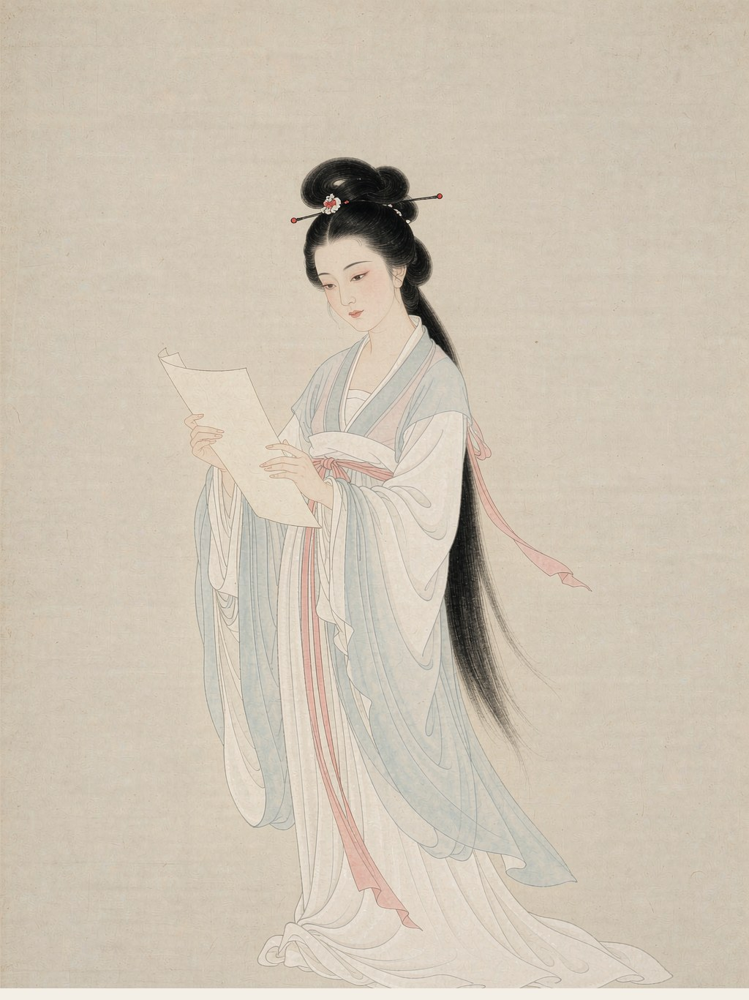
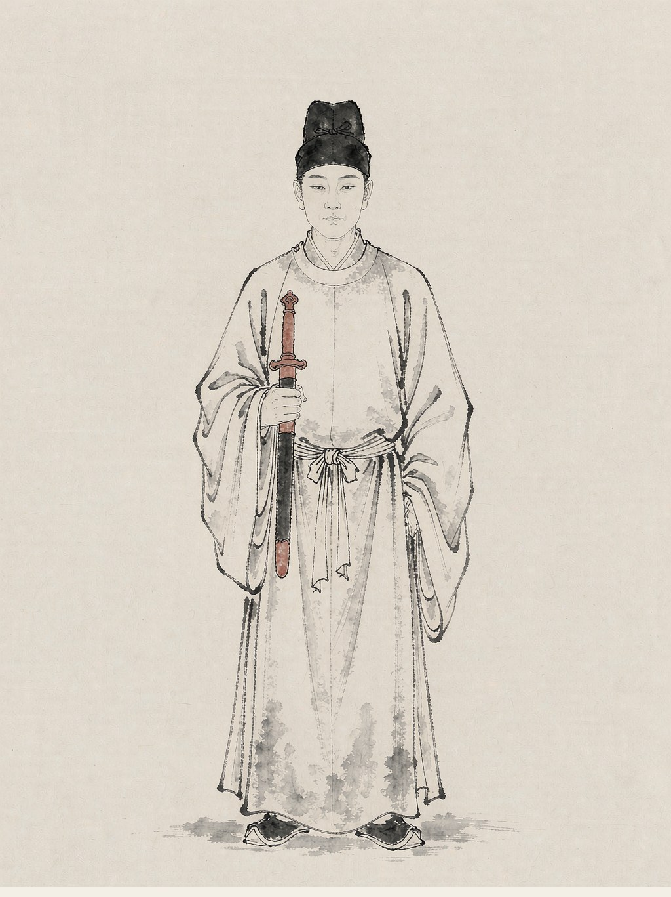

宋词
宋词是宋代（960—1279）最具代表性的文学形式，依调填词、长短句相间，或婉约或豪放。本栏目收录苏轼、李清照、辛弃疾三位词人的名篇。

苏轼
宋代词人字子瞻，号东坡居士，北宋文学家、书画家。“豪放派”词风代表，词开一代新风，亦擅婉约，诗文书画俱臻一流。

李清照
宋代词人号易安居士，宋代女词人，婉约派代表。前期词风清丽，后期历经离乱、沉哀入骨，善用白描。

辛弃疾
宋代词人字幼安，号稼轩，南宋豪放派词人。词风雄浑豪放，多抒发报国壮志与壮志未酬之慨，悲而能壮。